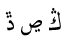
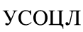
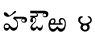
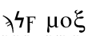
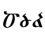
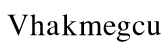

|
You boss seems to have written himself a note on a paper napkin. It's not from this restaurant, though: the logo in the corner declares it to be from " CAFE". It reads,"Space will be of no consequence at this dinner if so many people fail to show up! Everyone has been sending their excuses, along with what they say are signs from where they are. I think their stories add up to someting suspicious, myself." You're not sure what conclusions to draw from that.





